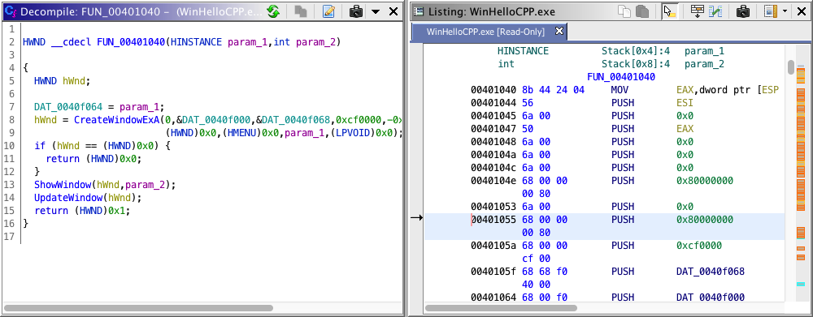

|  |
The Decompiler plug-in is a sophisticated transformation engine which automatically converts the binary representation of individual functions into a high-level C representation. The Decompiler presents a view of a program which is interactive and dynamically updated as the user adds or makes changes to the annotations associated with the program. A Decompiler window maintains the correspondence between the C representation and the assembly representation displayed in the Code Browser window, to the extent possible. The window allows instant visual association and navigation between C language expressions and their corresponding assembly instructions.
The Decompiler is a full Plug-in within Ghidra and can be configured to be enabled or disabled within any particular tool. Default configurations will have the plug-in enabled, but if its disabled for some reason, it can be enabled from within a Code Browser by selecting the menu option
Then click on the Configure link under the Ghidra Core section and check the box next to DecompilePlugin.
From the Code Browser, to open a Decompiler window, either:
-
Press the
 icon
in the tool bar, or
icon
in the tool bar, or
- Select the Decompile option from the Window menu.
The window automatically decompiles and displays the function at the current address. The address is set typically by left-clicking in the Listing window, or invoking the Goto command (pressing the 'g' key) and manually entering the address or some other label, but the Decompiler window follows any type of navigation in the Code Browser, triggering decompilation of the new function being displayed.
![[Tip]](../../shared/tip.png) |
|
| Any change to the function or Program made while using Ghidra causes the window to automatically redecompile the function it is displaying, to incorporate the new information. Changes include (but aren't limited to): Users can control decompilation in a wide variety of ways, see Program Annotations Affecting the Decompiler. |
Some of the primary capabilities of the decompiler include:
- Recovering Expressions
-
The decompiler does full data-flow analysis which allows it to perform slicing on functions: complicated expressions, which have been split into distinct operations/instructions and then mixed together with other instructions by the compiling/optimizing process, are reconstituted back into a single line.
- Recovering High-Level Scoped Variables
-
The decompiler understands how compilers use processor stacks and registers to implement variables with different scopes within a function. Data-flow analysis allows it to follow what was originally a single variable as it moves from the stack, into a register, into a different register, etc. Thus it can effectively recover the original program's concept of a variable, minimizing the need to introduce artificial variables in the output.
- Recovering Function Parameters
-
The decompiler understands the parameter passing conventions of the compiler and can reconstruct the original form of function calls.
- Using Data-type, Name, and Signature Annotations
-
The decompiler automatically pulls in all the different data types and variable names that the user has applied to functions, and the C output is altered to reflect this. High-level variables are appropriately named, structure fields and array indices are calculated and displayed with correct syntax, constant char pointers are replaced with appropriate quoted strings, etc.
- Propagating Local Data-types
-
The decompiler infers the data-type of unlabeled variables by propagating information from other sources throughout a function.
- Recovering Structure Definitions
-
The decompiler can be used to create structures that match the usage pattern of particular functions and variables, automatically discovering component offsets and data-types.